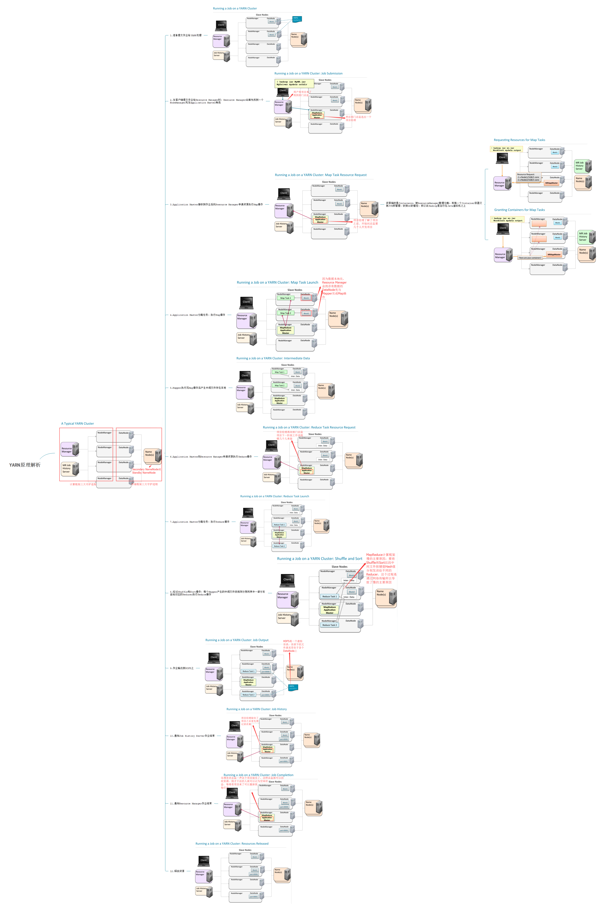
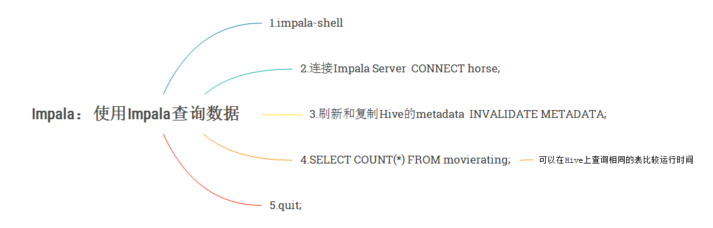
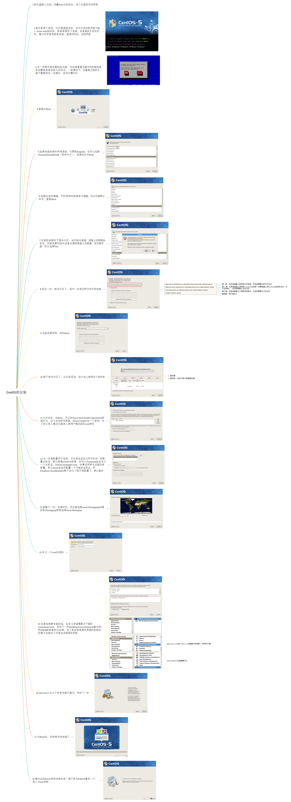
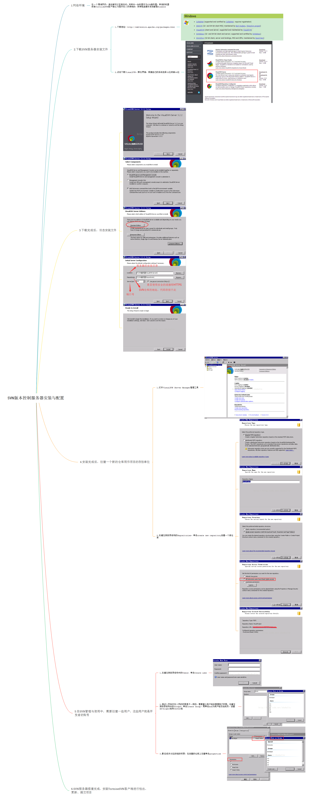

免打声明
此博客仅用于个人备忘，除了特别标注【转】的部分外基本上都为本人原创，少部分由于后期已无法找到地址进行注明，如侵犯了您的个人权益，深感抱歉，您可以发邮件知会本人进行删除。
学习文档
深度学习：
【转】理解Word2Vec之Skip-Gram模型（任意门）
【译】一步一步Backpropagation示例（任意门）
大数据组件：
【译】Cloudera Data Analyst Training-Pig
Hadoop：
【转】从Linux文件系统到Hadoop分布式文件系统hdfs（任意门）
【转】Hadoop HDFS本地目录结构解析（任意门）
【转】Hadoop MapReduce流程详解（任意门）
【转】hdfs fsck查看HDFS文件块信息（任意门）
思维导图
大数据原理部分：

大数据第2课
HDFS原理解析

大数据第3课
YARN原理解析

大数据第4课
MapReduce原理解析

大数据第5课
Shuffle原理解析

大数据第6课
Flume原理解析

大数据第7课
Sqoop原理解析
大数据实验部分：

大数据第1课
Linux
大数据第2课
配置安装服务器、NTP时间服务器

大数据第3课
安装Cloudera Hadoop集群

大数据第4课
使用MapReduce进行词频分析

大数据第5课
使用Flume把日志文件导入HDFS

大数据第6课
Sqoop&Hive导入RDBMS数据

大数据第7课
使用Impala查询数据

大数据第8课
从MySQL导入数据到HBase

大数据第9课
Python版本更新

大数据第10课
Spark版本更新

大数据第11课
Spark MLlib-Logistic regression

大数据第12课
Spark MLlib-Word2Vec
机器学习（Machine Learning）
算法总览：
算法分类
算法选择
监督学习（Supervised Learning）：
感知机（Perceptron），二分类算法
K近邻（K-Nearest Neighbor,KNN），多分类算法
朴素贝叶斯（Naive Bayes），多分类算法
决策树（Decision Tree,DT），多分类算法
逻辑回归（Logistic Regression,LR），多分类算法
支持向量机（Support Vector Machine,SVM），二分类算法
非监督学习（Unsupervised Learning）：
K-Means，聚类算法
隐马尔可夫模型（Hidden Markov Model,HMM）
奇异值分解（Sigular Value Decomposition,SVD），降维算法
主成分分析（Principal Components Analysis,PCA），降维算法
正则化（Regularization）
关联规则学习（Association Rule Learning）
集成学习（Ensemble Learning）：
Boosting：
Adaboost（Adaptive Boosting: Boosting + 单层决策树）
GBDT（Gradient Boosting Decision Tree: Boosting + 决策树）
XGBOOST
Bagging（Boostrap Aggregating）：
随机森林（Random Forest：Bagging ＋ 决策树）
深度学习（Deep Learning）
深度学习入门的七个步骤（李嘉璇）
图像识别（Image Recognition,IR）：
卷积神经网络（Convolutional Neural Network,CNN）- AlexNet
AlexNet是IMAGENET Challenge2012的获奖解决方案，这是最受欢迎的计算机视觉挑战之一，2012年是第一次使用深度学习来解决这个问题
生成对抗网络（Generative Adversarial Network,GAN）
自然语言处理（Natural Language Processing,NLP）：
循环神经网络（Recurrent Neural Network,RNN）
长短期记忆网络（Long Short-Term Memory,LSTM）
TF-IDF（term frequency–inverse document frequency）
BOW（Bag of Words）模型
Word2Vec模型
TensorFlow：
【转】TensorFlow数据读取机制（任意门）
【转】TensorFlow实现CNN原理（任意门）
【转】交叉验证（任意门）
【转】train loss与test loss结果分析（任意门）
【转】TensorBoard介绍与使用
【转】TensorBoard可视化助手
【转】Tensorflow可视化TensorBoard
【转】Tensorboard直方图使用指南
【译】构造你的TensorFlow模型
TensorFlow实现CNN
其它

CentOS的安装

SVN版本控制服务器安装与配置

服务器负载均衡


{kind=link}
{kind=link}
{kind=link}
{kind=link}
{kind=link}
{kind=link}
{kind=link}
{kind=link}
{kind=link}
{kind=link}
{kind=link}
{kind=link}
{kind=link}
{kind=link}
{kind=link}
{kind=link}